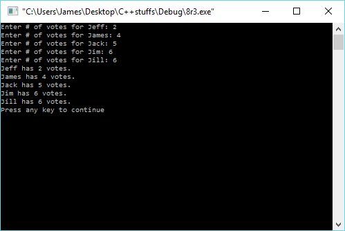

#include<iostream>
#include<vector>
#include<string>
using namespace std;
void main()
{
int j = 0;
vector <string> can(5);
vector <long> votes(5);
can[j++] = "Jeff";
can[j++] = "James";
can[j++] = "Jack";
can[j++] = "Jim";
can[j++] = "Jill";
for (int i = 0; i < votes.size(); i++)
{
cout<<"Enter # of votes for "<<can[i]<<": ";
cin>>votes[i];
}
for (i = 0; i < votes.size(); i++)
{
cout<<can[i]<<" has "<<votes[i]<<" votes."<<endl;
}
